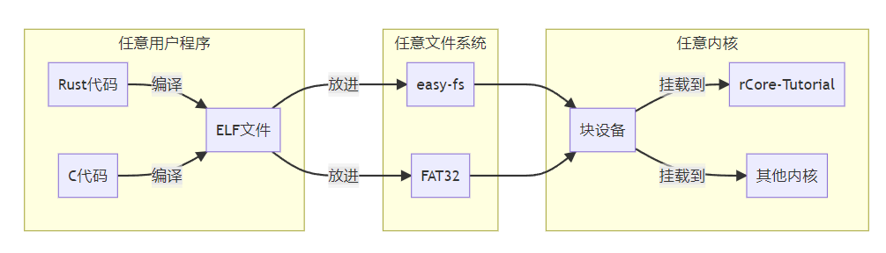

运行裸机 C 程序
建议至少做完 rCore-Tutorial ch6 再做这个实验。
实验准备
本实验需要用到交叉编译的工具链：https://musl.cc/riscv64-linux-musl-cross.tgz。下载解压后将里面的 bin 目录放到你的 PATH 中，然后尝试使用以下命令
riscv64-linux-musl-gcc --version
来检查是否安装成功。
如果忘了怎么安装这类包，可以看
rCore-Tutorial指导书第0章环境配置中安装 Qemu 模拟器一节，操作是类似的。
实验概述
在往年的 rCore-Tutorial 实验中，有些同学会有这样一种感受：整个 rCore-Tutorial 是一个完整的项目，从内核到测例到文件系统都是用 Rust 连接的，修改任何一部分都需要做额外的兼容。就像下面这样：
但其实这中间都是二进制接口，只是被实验仓库里完善的脚本掩盖了。我们可以任意更换这其中的每个部分，而不需要做另外的适配：

在本章中，我们将回顾用户程序的编译与加载流程，然后使用一个极简的 C 用户程序库代替 rCore-Tutorial 原有的 /user 测例，并修改上面这套编译、打包、加载的流程中的各个 Makefile，让原本只支持 rCore-Tutorial 自带的 Rust 测例的内核运行一个从 C 语言编译的应用程序。
在实验之后
运行 C 用户程序是OS比赛初赛的第一步。如果你正在参赛或者准备参赛，那么在完成这个实验之后，还有下面这些工作要做
尝试通过比赛初赛测例库
比赛初赛测例库 可以直接访问，通过它也就通过了初赛。这个测例库比当前实验里要稍微复杂一些，但功能上相比 rCore-Tutorial 不会有太大变化。注意比赛的 syscall 规范和 rCore-Tutorial 的会有细微差别。
更换一个 FAT32 类型的文件系统
这是比赛初赛的要求。你可以自己写一个，也可以参考往年获奖作品的实现，也可以使用现有的开源项目，比如rust-fatfs。
FAT32 的好处在于，它是一个公共的文件系统格式。因此可以直接用 dd 和 mkfs.vfat 命令创建一个镜像（具体要求看比赛），然后直接在本地挂载它就可以往里塞文件了，完全不需要 easy-fs-fuse：
# in makefile
-mkdir temp
sudo mount ./fs.img temp
-sudo cp -r -a ./testcases/* ./temp/
sudo umount ./fs.img
rmdir temp
这段命令把 fs.img挂载到 temp 文件夹中，然后把 testcases 里的所有测例都塞了进去，实际上和 easy-fs-fuse 做的事情是一样的。
顺便一提，
-开头的命令会如果执行失败，则 makefile 仍然继续进行下面的命令。第一条指令的
-是因为目录本身可能已存在，第三条指令的-开头是因为本地文件系统中可能有符号链接，它们在被复制进不支持链接的 FAT32 时会报错。无论如何，我们希望第三行指令执行完成后必须执行第四行指令umount ./fs.img，也就是取消fs.img的挂载。否则宿主机上可能会因为一次make失败而永远挂着这么一个文件系统。
考虑离线编译
截至目前，比赛的评测机不支持联网。因此，你可能需要为内核准备一个“离线”编译模式。具体来说，需要在内核 cargo build 的地方加上参数 --offline，然后在这个模式下将所有评测机不支持的依赖库拉到项目里。可以用 Makefile 变量等方式来控制这个参数。
如果本地网络不是很好的话，这种离线编译方式也许能为本地调试节省一些时间。毕竟，编译 Rust 项目时卡在拉取依赖库上实在是太常见了。